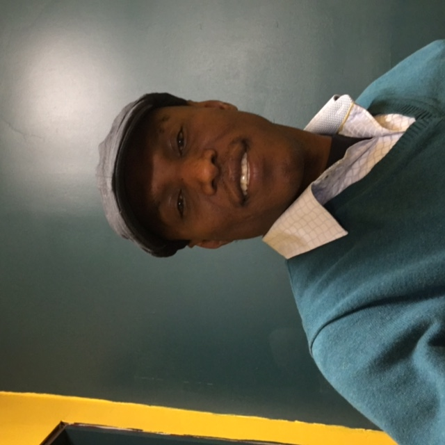

Abdifatah Yusuf - been2001@yahoo.com

Summary
- Detail oriented, great communication skills, Excellent requirement gathering.
- Dedicated professional with extensive experience in SDLC, SCRUM.
- Performance and usability to meet deadlines with all projects, activities.
- Excellent communication skills and people persona.
Skills
- Html
- CSS
- basic JavaScript, JQuery
- SQL Query
- MS project
- Excel, Access
- Agile and waterfall environment.
EMPLOYMENT EXPERIENCE
Rosemount Inc. - Chanhassen, MN
Tech Analyst
Nov, 2012 present
- Perform projects involving fabrications, documentation, programming and assembling
- Implement from engineering drawings, detailed sketches, verbal instructions where layout types of components and dimensions are specified.
- Perform inspections to insure that equipment’s fulfilled quality requirement
- Revised and completed 100% assigned line product codes SOP's and Job Safety Analysis (JSA) for continuous improvements.
- Consistently and fairly administered and supported company’s safety and quality policies, procedures and guidelines.
- Recommended and participated in appropriate disciplinary actions of direct reports.
Millennium Health Service - Minneapolis
Business Analyst
Jan, 2010 Sept. 2012
- Developed technical specifications in alignment with defined functional requirements.
- Wrote SQL queries, statements, table relationships and Stored Procedures.
- Served as a liaison between business partners and application development team members to analyze, document, and validate functional requirements.
- Designed screens, reports, projects, dataflow and create reports to align with business needs and for documented and tracked business application request's lifecycle; to ensure priorities, changes and issues.
Education
University of Minnesota